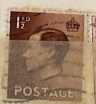
| SOURCE | TITLE| IMAGE MATCH | click to source page |
| eBay | GB King Edward VIII 1936 Brown 1 1/2D Stamp Unused Or Hinged | eBay | 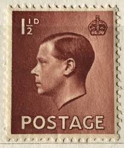 |
| eBay | Great Britain Postage ~ King Edward VIII ~ 1½D Red Stamp ~ Posted/Used ~ 1936 ~1 | eBay | 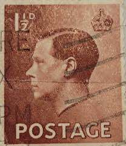 |
| HipStamp | Great Britain #232 Edward VIII Used | Great Britain, General Issue Stamp / HipStamp | 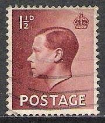 |
| eBay | Red 1 1/2 d Denomination British Stamps | eBay | 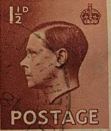 |
| eBay | Royalty Used British Edward VIII Stamps for sale | eBay | 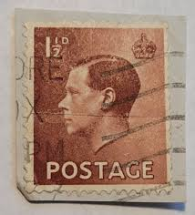 |
| eBay | Red 1 1/2 d Denomination British Stamps for sale | eBay | 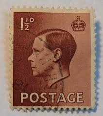 |
| eBay | Royalty Used British Edward VIII Stamps for sale | eBay | 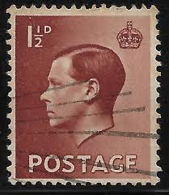 |
| HipStamp | Great Britain #232 1 1/2P King Edward 8th, used VF | Great Britain, General Issue Stamp / HipStamp | 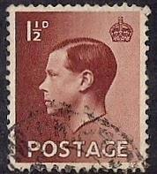 |
| eBay | Preços baixos em Selos usados da realeza britânica de Edward VIII | eBay | 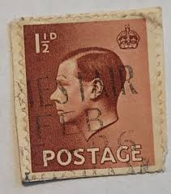 |
| eBay | Used British Edward VIII Stamps for sale | eBay | 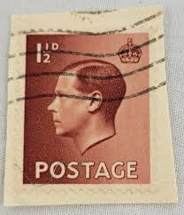 |
| eBay | Royalty British Edward VIII Stamps for sale | eBay | 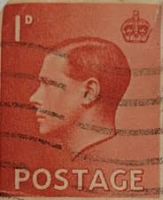 |
| Poppe Stamps | Poppe Stamps: Great Britain, 1936, 459, King Edward Viii, King Edward Viii - stamps for sale by theme and country | 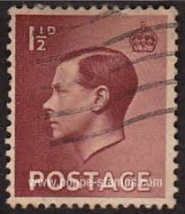 |
| eBay UK | Good (G) Used Great Britain Edward VIII Stamps for sale | eBay UK | 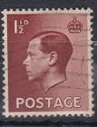 |
| eBay | Used British Edward VIII Stamps for sale | eBay | 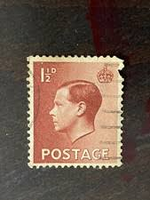 |
| eBay | British George VI Stamps 1 1/2 d Denomination for sale | eBay | 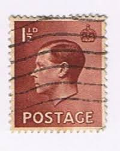 |
| eBay | Royalty Used British Edward VIII Stamps | eBay | 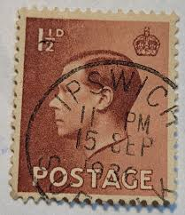 |
| Federal University of Agriculture, Abeokuta | EDWARD VIII STAMPS | 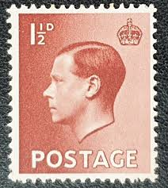 |
| Coins Galore | Edward VIII SG459 1½d brown 1936 – Coins and Stamps Galore | 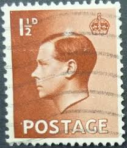 |
| eBay | Great Britain Scott #232v Inverted Watermark Used | eBay | 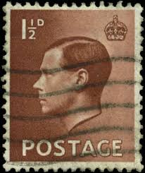 |
| SBM Easi Trade | SBM Easi Trade :: Stamp :: Great Britain | 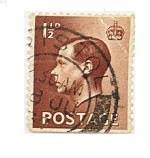 |
| Mercari | 1936 United Kingdom of Great Britain 1 1/2d | Mercari | 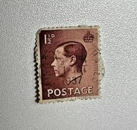 |
| Shutterstock | India Circa 1950 Stamp Printed India Stock Photo 89272987 | Shutterstock | 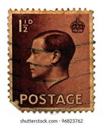 |
| eBay | NORWAY/NORGE Postage ~ King Haakon VII ~ 30 øre Red Stamp ~ Posted ~1952 ~ P02 | eBay | 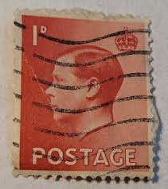 |
| Poppe Stamps | Poppe Stamps: Great Britain, 1936, 459, King Edward Viii, King Edward Viii - stamps for sale by theme and country | 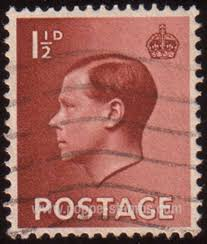 |
| eBay | British Edward VIII Stamps for sale | eBay | 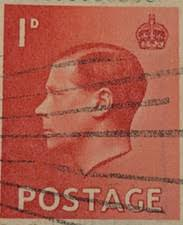 |
| iStock | Vintage Stamp Printed In Great Britain 1939 Shows King George Vi Stock Photo - Download Image Now - iStock | 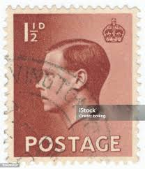 |
| eBay | 1936 G.Britain King Edward VIII 1 1/2d S#232 Postage Stamp RARE USED VF | eBay | 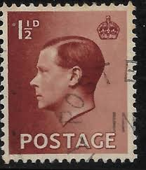 |
| eBay | GREAT BRITAIN 232 (SG459) - King Edward VIII "1936 Red Brown" (pf6293) | eBay | 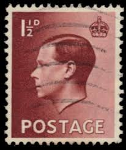 |
| commonwealthstamps.com | Postage Stamps Issued in the reign of King Edward VIII 1936 | 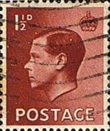 |
| Shutterstock | 1+ Hundred Edward Viii Royalty-Free Images, Stock Photos & Pictures | Shutterstock | 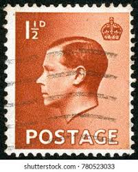 |
| eBay | Brown 1 1/2 d Denomination British Stamps | eBay | 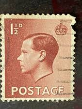 |
| eBay | GB King Edward VIII 1936 Brown 1 1/2D Stamp Unused Or Hinged | eBay | 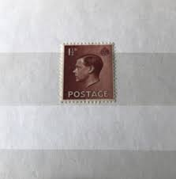 |
| Alamy | Edward viii stamp hi-res stock photography and images - Alamy | 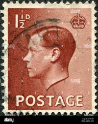 |
| eBay UK | Royalty Great Britain Edward VIII Stamps for sale | eBay UK | 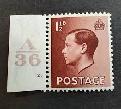 |
| eBay | 1936 Great Britain King Edward VIII 1 1/2d Red Brown Postage Stamp | eBay | 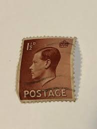 |
| Dreamstime.com | British Used Postage Stamp Depicting King Edward VIII Editorial Photo - Image of king, antique: 210768741 | 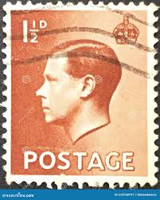 |
| Kiddle - visual search engine for kids | Postage stamps and postal history of Great Britain Facts for Kids | 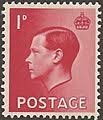 |
| Alamy | Great Britain Postage Stamp - King George V Stock Photo - Alamy | 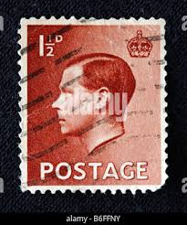 |
| Shutterstock | Profile Picture Old Man: Over 742 Royalty-Free Licensable Stock Photos | Shutterstock | 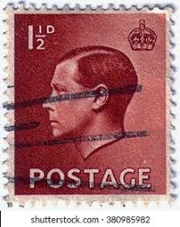 |
| iStock | Stamp Showing A Portrait Of General Francisco Franco 18921975 Circa 1949 Stock Photo - Download Image Now - iStock | 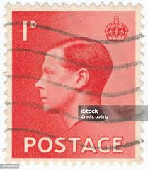 |
| eBay | 1936 G.Britain King Edward VIII 1p SC#231 Postage Stamp 🔥RARE USED 🔥 VF | eBay | 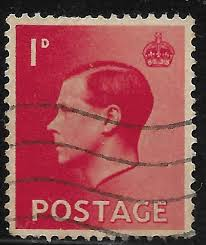 |
| Alamy | Edward viii abdication letter hi-res stock photography and images - Alamy | 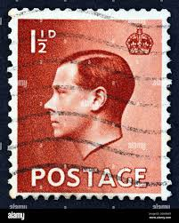 |
| iStock | British King Edward Viii Postage Stamp Stock Photo - Download Image Now - Black Background, Blue, British Culture - iStock | 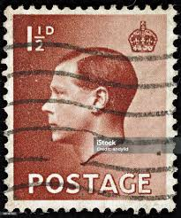 |
| eBay | Great Britain Postage ~ King Edward VIII ~ 1D Red Stamp ~ Posted/Used ~ 1936 ~01 | eBay | 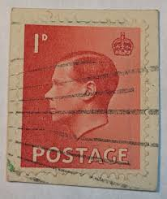 |
| Collect GB Stamps | Stamp Classics (2019) : Collect GB Stamps | 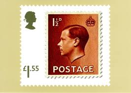 |
| Poppe Stamps | Poppe Stamps: Great Britain, 1936, 459, King Edward Viii, King Edward Viii - stamps for sale by theme and country | 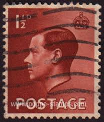 |
| ebid.net | Edward VIII items for Sale in Stamps > Great Britain on eBid United Kingdom | Page 1 | 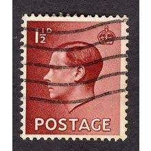 |
| Etsy | 1936 King Edward VIII Green British Penny Stamp - Etsy | 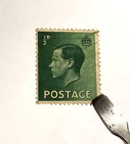 |
| PressReader | KING EDWARD VIII - PressReader | 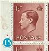 |
| Dauwalders | SG458 1d Red | |
| eBay | GB Edward VIII 1936 Brown 1 1/2d Stamp Used | eBay | |
| eBay | Foreign Postage 1 1/2d Stamp Used - #A1158 | eBay | |
| eBay | Lot 7 Cancelled Used GB STAMPS KING EDWARD VIII THE UNCROWNED KING | eBay | |
| eBay | BRITISH MOROCCO AGENCIES 438 - King Edward VIII "1936 Red Brown" (pb23286) | eBay | |
| Hi and thank you very much for the add. I have the attached stamps of Edward VIII. As we all know he abdicated so I don't think many would have been issued. | ||
| Paul Fraser Collectibles | Rare Postage Stamps – Victorian, Classics & Errors – Page 8 | |
| Media Storehouse | King Edward VIII Print, 1936 Postage Stamp. Art Prints, Posters & Puzzles from Heritage Images | |
| HipStamp | UK 232: 1.5d Edward VIII, used, F-VF | Great Britain, General Issue Stamp / HipStamp | |
| Reeman Dansie | Lot 1405 - Stamps Great Britain Booklet 1936 3/- Red | |
| 38 Hobby ideas | postage stamps, stamp collecting, philately |